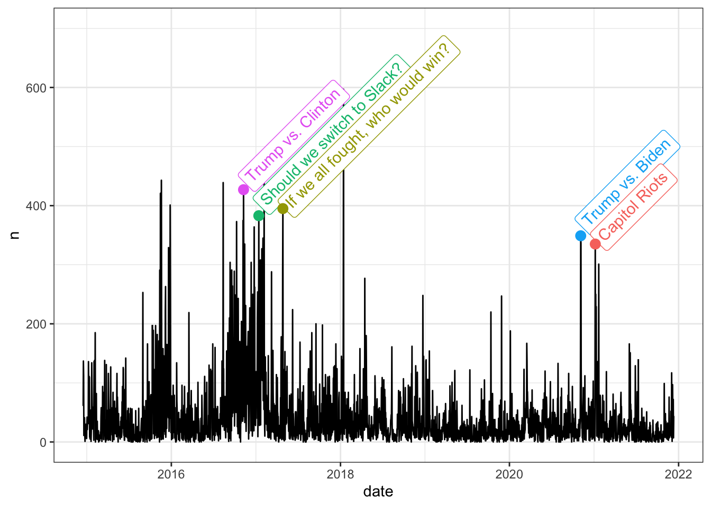
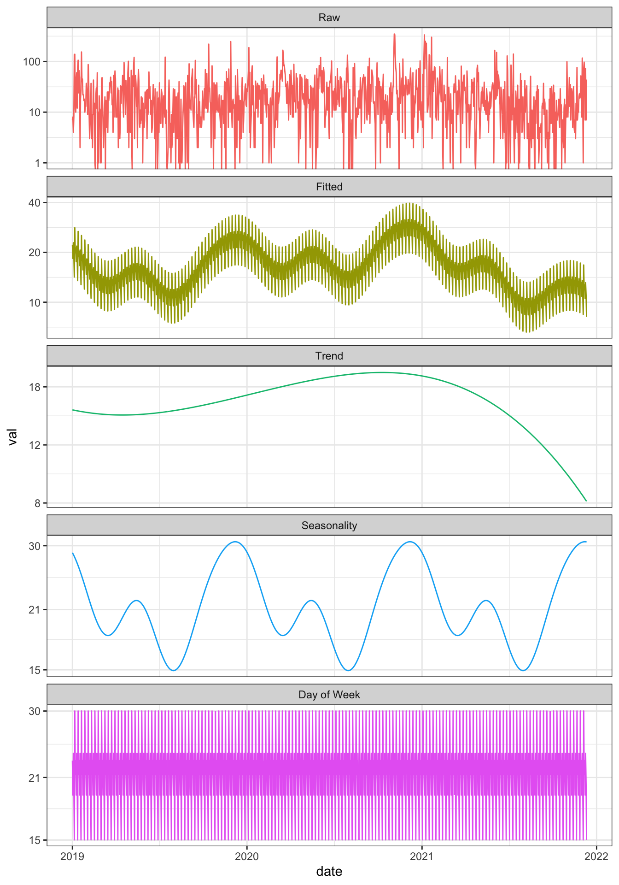
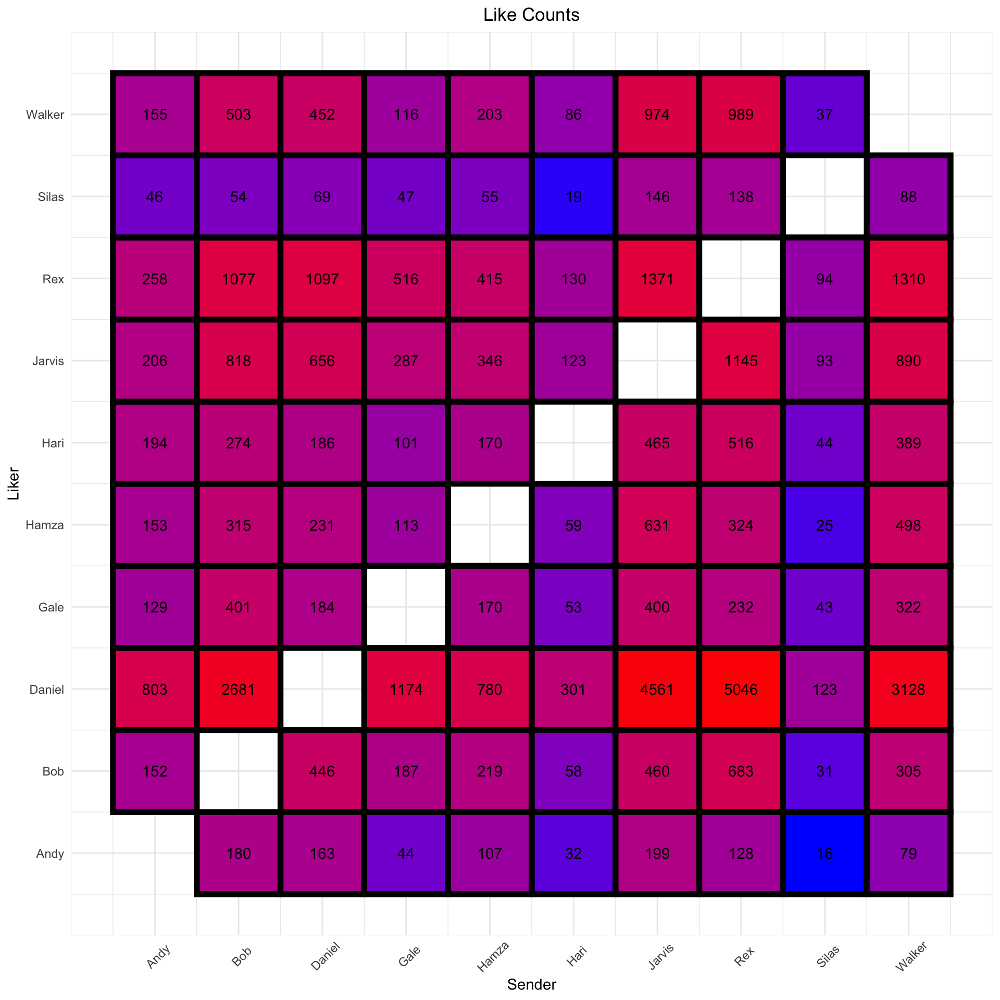
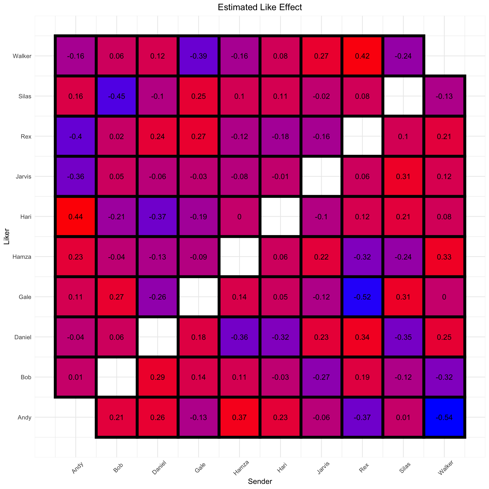
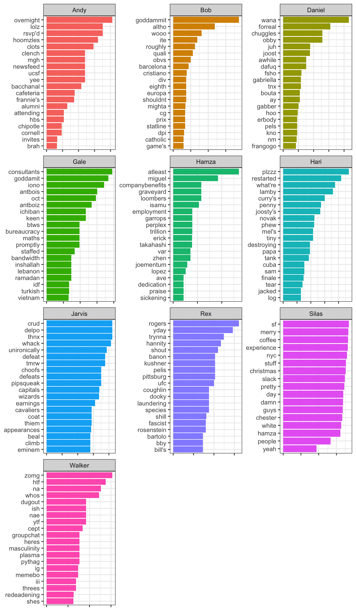

If you’re like me, your entire sense of self worth is defined by how much clout you have in a group chat composed of random dudes you became friends with the first day of freshman year. Yes, the GroupMe trends – who’s roasting whom, who’s getting likes, who’s getting left on read – these are the things that define a man.
As always, it’s best to get a quantified understanding of such an important matter. Luckily, the GroupMe web app makes available your entire message history.

The chat is formatted as a JSON, but we can easily load and flatten it into a dataframe and do a little bit of data cleaning:
library(tidyverse)
library(jsonlite)
library(lubridate)
library(rstan)
library(splines)
library(knitr)
library(tidytext)
options(dplyr.summarise.inform = FALSE)
options(mc.cores = 4)
msgs <- fromJSON('/Users/walkerharrison/Downloads/Groupme/message.json', flatten = TRUE)
msgs <- msgs %>%
# GroupMe will send updates to the chat sometimes
filter(sender_type == "user" & name != "GroupMe") %>%
select(id, created_at, sender = name, sender_id, text, liked_by = favorited_by) %>%
mutate(created_at = as_datetime(created_at, tz = Sys.timezone())) %>%
# likes are a list column that we can measure the size of
mutate(likes = map_int(.$liked_by, ~length(.x)))Likes are currently housed in a list column with a vector for each row, and need to be mapped from user IDs to actual names:
sender_map_df <- msgs %>%
select(sender_id, sender) %>%
distinct() %>%
arrange(sender)
sender_map_list <- as.list(sender_map_df$sender) %>% set_names(sender_map_df$sender_id)
# essentially a new column with dictionary look-ups of user names
msgs$liked_by_sender <- map(msgs$liked_by, ~unname(sender_map_list[unlist(.x)]))Modeling Chat Activity
Overall, our group has managed to send over 100,000 messages in the last seven years or so, distributed unevenly among heavy contributors and those smart enough to leave us on Do-Not-Disturb most of the time (i.e. Silas).
msgs %>%
count(sender, sort = TRUE) %>%
kable()| sender | n |
|---|---|
| Rex | 25250 |
| Jarvis | 18663 |
| Daniel | 15766 |
| Bob | 15630 |
| Walker | 11328 |
| Gale | 6871 |
| Hamza | 3571 |
| Andy | 2978 |
| Hari | 2105 |
| Silas | 267 |
Like any group conversation, sometimes our chat is poppin’ and sometimes it goes dry. In particular, there’s lot of chatter around NFL football and its implications on our fantasy league, which makes the fall season (and Sundays especially) a lively time in our GroupMe. You might be able to see these patterns if you squint at the daily message total, which I’ve overlaid with the descriptions of several high-volume, non-sports days:
msgs_by_date <- msgs %>%
count(date = date(created_at)) %>%
# fills outs missing days
right_join(data.frame(
date = seq(min(.$date), max(.$date), by = 'day')
),
by = 'date') %>%
arrange(date) %>%
# assigns those days 0 messages
mutate(n = coalesce(n, 0)) %>%
mutate(day_of_week = weekdays(date),
day_of_week_idx = wday(date),
month = month(date, label = TRUE),
month_idx = month(date)) %>%
mutate(idx = row_number())
big_days <- tribble(
~date, ~event,
"2016-11-08", "Trump vs. Clinton",
"2017-01-13", "Should we switch to Slack?",
"2017-04-27", "If we all fought, who would win?",
"2020-11-04", "Trump vs. Biden",
"2021-01-06", "Capitol Riots",
) %>%
mutate(date = as_date(date)) %>%
inner_join(msgs_by_date, by = "date")
msgs_by_date %>%
ggplot(aes(date, n)) +
geom_line() +
ggtext::geom_richtext(aes(date, n, label = event, col = event),
data = big_days, size = 4, hjust = 0, angle = 45,
nudge_x = c(10, 8, 12, 8, 12),
nudge_y = c(10, 15, -2, 14, 2)) +
geom_point(aes(date, n, col = event), data = big_days, size = 3) +
scale_y_continuous(limits = c(0, 700)) +
theme_bw() +
theme(legend.position = 'none')
But it’s better to build an actual model. The Stan model below will decompose our daily message count into:- an overall trend that uses a B-spline to figure out the general level of activity over the years
- in-year harmonics that capture the effect of certain months or seasons
- a day-of-week effect that picks up on how our message count will fluctuate for Sundays, Mondays, etc.
Note that to accommodate our daily counts, which are constrained non-negative, we build a “hurdle” model such that a certain percentage of days get 0 messages and the rest are distributed log-normal.
# sufficiently flexible basis expansion of our time interval
B <- t(
bs(msgs_by_date$idx,
knots = seq(1, max(msgs_by_date$idx), length.out = 6),
degree = 3,
intercept = TRUE)
)
D <- nrow(B)
fit <- stan("groupme_ts.stan",
data = list(
T = nrow(msgs_by_date),
D = D,
K_yr = 3,
wday = msgs_by_date$day_of_week_idx,
msgs = msgs_by_date$n,
idx = msgs_by_date$idx,
B = B
),
chains = 4,
init = 0
)
posterior <- rstan::extract(fit)The visualization (for which the basic ggplot code is hidden) shows that our chat has been quieter than usual of late, down to an average daily message count of 8 from its peak a year ago of over 18.
That’s without seasonal adjustment however – once you factor in that messages pick up in the late fall and winter, as demonstrated in the “Seasonality” panel, our current frequency is simply low for this time of year.
And finally, if you decompressed the rapid-fire spikes in the “Day of Week” panel, you’d see that our chat is most active on Sundays, as we react to NFL games, and least active on Saturdays, hopefully on account of our burgeoning social lives.

Who likes Whom?
Of course in the world of GroupMe, the chief currency is likes. There are few better feelings than collecting a half dozen likes for a good joke or a pithy observation. We could simply count how many likes each person gets from other members of the group:
liked_df <- msgs %>%
# expand each message to a row for each potential liker
crossing(sender_map_df %>% select(liker = sender)) %>%
filter(sender != liker) %>%
rowwise() %>%
# see if the potential liker is actually in the liked list column
mutate(liked = liker %in% unlist(liked_by_sender)) %>%
ungroup() %>%
select(id, created_at, text, sender, liker, liked) %>%
mutate(combo = paste0(liker," -> ", sender)) %>%
# need to index everything to use a factor variables in model
arrange(sender) %>%
mutate(sender_idx = as.numeric(as.factor(sender))) %>%
arrange(liker) %>%
mutate(liker_idx = as.numeric(as.factor(liker))) %>%
arrange(liker, sender) %>%
mutate(combo_idx = as.numeric(as.factor(combo)))
liked_df_grouped <- liked_df%>%
group_by(sender, sender_idx, liker, liker_idx, combo, combo_idx) %>%
summarize(msgs = n(),
likes = sum(liked)) %>%
ungroup()
liked_df_grouped %>%
ggplot(aes(sender_idx, liker_idx)) +
geom_tile(aes(fill = log(likes)), color = "black",size=2) +
geom_text(aes(label = likes)) +
scale_x_continuous(breaks = 1:10, labels = sender_map_df$sender) +
scale_y_continuous(breaks = 1:10, labels = sender_map_df$sender) +
scale_fill_gradient(low = "blue", high = "red") +
theme_minimal() +
theme(legend.position = "none",
plot.title = element_text(hjust = 0.5),
axis.text.x = element_text(angle = 45, margin = margin(t = 10, b = -10))) +
labs(x = "Sender", y = "Liker", title = "Like Counts")
But this is a rather crude and misleading way to measure likability, because it’s difficult to separate the interaction effects between a sender and a liker from the general rates that we’d expect those two to achieve. Put another way: sure Daniel has given over 5,000 likes to Rex historically, but is that actually more than we’d expect given that Daniel is liberal with his likes anyway and that Rex makes many like-worthy posts?
So we should build another model. We use the transformed dataset liked_df, which has a row for each potential like (so that the data size is the number of messages multiplied by the size of the group), and implement the formula below, where a like is a binary outcome suited for a logistic regression:
like ~ liker + sender + liker:sender
For any message, the first two effects will capture how frequently the sender and the liker generate likes in general, while the interaction effect will capture any ability for those two to over- or underperform the preceding main effects.
As a final note, consecutive messages by the same sender have been “chained” together into single, amalgamated messages and been awarded the unique set of likers across all the individual messages. This modification was made so as not to punish people who like to chop their statements up across multiple messages.
msgs_chained <- msgs %>%
arrange(created_at) %>%
mutate(same = coalesce(sender != lag(sender), TRUE)) %>%
# create new id for clusters of messages by same sender
mutate(new_id = cumsum(same)) %>%
group_by(new_id, sender, sender_id) %>%
# combine text, likes; average timestamp
summarize(created_at = mean(created_at),
text = paste0(text, collapse = "//"),
liked_by_sender = list(unique(c(unlist(liked_by_sender))))) %>%
rowwise() %>%
mutate(likes = length(liked_by_sender)) %>%
ungroup()
# same as before
liked_df <- msgs_chained %>%
crossing(sender_map_df %>% select(liker = sender)) %>%
filter(sender != liker) %>%
rowwise() %>%
mutate(liked = liker %in% unlist(liked_by_sender)) %>%
ungroup() %>%
select(new_id, created_at, text, sender, liker, liked) %>%
mutate(combo = paste0(liker," -> ", sender)) %>%
arrange(sender) %>%
mutate(sender_idx = as.numeric(as.factor(sender))) %>%
arrange(liker) %>%
mutate(liker_idx = as.numeric(as.factor(liker))) %>%
arrange(liker, sender) %>%
mutate(combo_idx = as.numeric(as.factor(combo)))
liked_df_grouped <- liked_df %>%
group_by(sender, sender_idx, liker, liker_idx, combo, combo_idx) %>%
summarize(msgs = n(),
likes = sum(liked)) %>%
ungroup()
like_fit <- stan("like_model.stan",
data = list(
N = nrow(liked_df_grouped),
msgs = liked_df_grouped$msgs,
likes = liked_df_grouped$likes,
N_group = max(liked_df_grouped$sender_idx),
sender = liked_df_grouped$sender_idx,
liker = liked_df_grouped$liker_idx,
combo = liked_df_grouped$combo_idx
),
chains = 4,
init = 0
)
posterior <- rstan::extract(like_fit)Taking the main “sender” and “liker” effects out of the model shows that, overall, Silas receives a great deal of likes and Rex and Daniel like to give them out. Personally, I both receive and bequeath likes at a slightly above average rate. As a reminder, these effect are on a log-odds scale since the model is in the binomial family:
liked_df_grouped %>%
ungroup() %>%
select(name = sender, idx = sender_idx) %>%
arrange(idx) %>%
distinct() %>%
mutate(receive = round(apply(posterior$alpha,2, mean), 2),
give = round(apply(posterior$beta, 2, mean), 2)) %>%
select(-idx) %>%
kable()| name | receive | give |
|---|---|---|
| Andy | 0.35 | -1.12 |
| Bob | -0.32 | -0.11 |
| Daniel | -0.47 | 1.86 |
| Gale | -0.46 | -0.37 |
| Hamza | 0.22 | -0.25 |
| Hari | -0.35 | -0.23 |
| Jarvis | -0.10 | 0.64 |
| Rex | -0.28 | 0.93 |
| Silas | 1.28 | -1.50 |
| Walker | 0.13 | 0.14 |
The juicier revelations come from the “combo” effect, which reveals when the combination of message sender and liker is greater (or less) than the sum of its parts. Printing some of the more extreme values and recreating the visualization from above shows some interactions that we couldn’t have found without the model. Namely, Hari’s generosity toward Andy and Andy’s stinginess toward me weren’t apparent using the simple counting technique:
liked_df_grouped <- liked_df_grouped %>%
arrange(combo_idx) %>%
mutate(effect = round(apply(posterior$gamma, 2, mean), 2))
liked_df_grouped %>%
select(combo, effect) %>%
# just show some of the extremes
filter(rank(effect) <= 5 | rank(-effect) <= 5) %>%
arrange(desc(effect)) %>%
kable()| combo | effect |
|---|---|
| Hari -> Andy | 0.44 |
| Walker -> Rex | 0.42 |
| Andy -> Hamza | 0.37 |
| Daniel -> Rex | 0.34 |
| Hamza -> Walker | 0.33 |
| Walker -> Gale | -0.39 |
| Rex -> Andy | -0.40 |
| Silas -> Bob | -0.45 |
| Gale -> Rex | -0.52 |
| Andy -> Walker | -0.54 |
liked_df_grouped %>%
ggplot(aes(sender_idx, liker_idx)) +
geom_tile(aes(fill = effect), color = "black", size=2) +
geom_text(aes(label = round(effect, 2))) +
scale_x_continuous(breaks = 1:10, labels = sender_map_df$sender) +
scale_y_continuous(breaks = 1:10, labels = sender_map_df$sender) +
scale_fill_gradient(low = "blue", high = "red") +
theme_minimal() +
theme(legend.position = "none",
plot.title = element_text(hjust = 0.5),
axis.text.x = element_text(angle = 45, margin = margin(t = 10, b = -10))) +
labs(x = "Sender", y = "Liker", title = "Estimated Like Effect")
As a final note on this matter, it’s worth mentioning that total number of messages sent by a user is negatively correlated with how many likes that person gets and positively correlated with how many likes that person gives out. In other words, people that use the app infrequently are disproportionately celebrated, perhaps because the rest of us are so happy just to hear from them, and also less likely to favorite other people’s messages, probably because they never saw them in the first place.
Text Analysis
We’ve written a lot of code and words without addressing the actual content of the messages. While I don’t trust something like sentiment analysis to capture the complex tones and voices of our group, some basic term frequency work will show what words are most associated with certain people.
Below are the top 20 words everyone uses as scored by term frequency-inverse term frequency, which is a personal modification on the classic text mining statistic tf-idf. In short, these terms are those that are most unique to a single user in that the person uses them while the rest of the group does not for the most part.
The results are a combination of people’s idiosyncrasies and also simply the things they talk about more than others. For me that means saying “zomg” instead of “omg” and “htf”/“ytf” instead of certain expressions, but also talking about “dugouts,” “masculinity,” and “plasma” (yeah I don’t know either).
data(stop_words)
msgs_tokens <- msgs %>%
mutate(text = str_replace_all(text, "’", "'")) %>%
# remove links since they screw up the tokenizer
filter(!is.na(text), !str_detect(text, "http"), !str_detect(text, "https")) %>%
unnest_tokens(word, text) %>%
anti_join(stop_words, by = "word") %>%
anti_join(bad_words, by = "word")
user_word_count <- msgs_tokens %>%
group_by(sender, word) %>%
summarize(n = n(),
n_date = n_distinct(date(created_at))) %>%
group_by(sender) %>%
# text frequency for each user's words
mutate(tf = n/sum(n)) %>%
ungroup() %>%
# get rid of numbers and periods
filter(!str_detect(word, "\\.|[0-9]|_")) %>%
group_by(word) %>%
# count how much everybody else uses the word
mutate(n.else = sum(n) - n) %>%
ungroup() %>%
# calculate inverse term frequency (not IDF like usual)
mutate(itf = -log((n.else+1)/(n_distinct(sender) - 1))) %>%
mutate(score = tf*itf)
user_word_count %>%
filter(n_date >= 3, !str_detect(word, "f.*k")) %>%
arrange(desc(score)) %>%
group_by(sender) %>%
slice(1:20) %>%
mutate(word = factor(word, levels = rev(unique(word)))) %>%
mutate(word = reorder(word, score)) %>%
# makes it a little easier to read the graph
mutate(score = score - min(score) + abs(min(score))) %>%
ggplot(aes(word, score, fill = sender)) +
geom_col(show.legend = FALSE) +
labs(x = NULL, y = NULL) +
facet_wrap(~sender, scales = "free", ncol = 3) +
coord_flip() +
theme_bw() +
theme(axis.text.x = element_blank())
In conclusion, this was one of the more enjoyable analyses I’ve had the pleasure of running on my blog. The subject matter led me to various wings of data science like time series, natural language processing, and mixture modeling. But mostly I enjoyed writing this because I got to celebrate my long-lasting friendship with people who have spread out across the world but still make an effort to communicate with each other (especially on Sundays). Sure they may be random dudes, but they’re my random dudes. ✌🏻